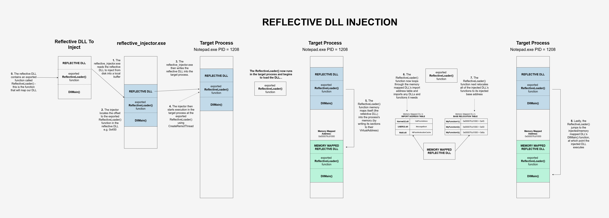
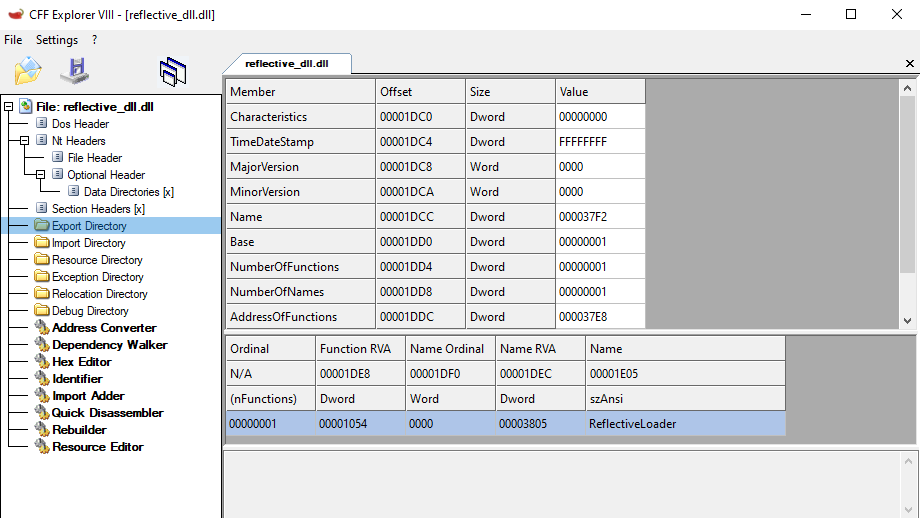
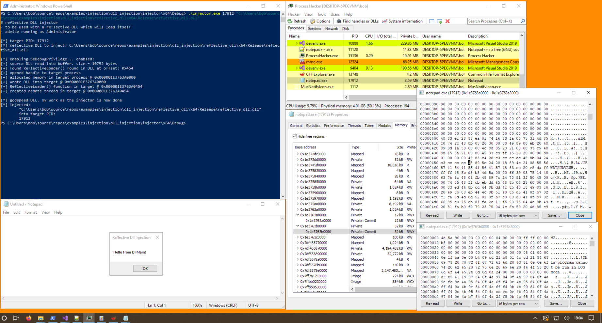

# Reflective DLL Injection
•
https://github.com/stephenfewer/ReflectiveDLLInjection - original Author of technique - ALL CREDIT GOES HERE
•
https://disman.tl/2015/01/30/an-improved-reflective-dll-injection-technique.html•
https://zerosum0x0.blogspot.com/2017/07/threadcontinue-reflective-injection.html - using SetThreadContext and NtContinue
Reflective DLL injection is a DLL that maps itself.
You write your DLL into the target process and then pass execution to an exported ReflectiveLoader() function in the DLL that you've injected which will:
• grab the current process's PEB, find Kernel32.dll and Ntdll.dll, and loop through those modules to find the function addresses it needs
• allocate memory in the target (now the current) process
• memory map itself (the DLL you've injected) into the allocated memory
• fix its imports
• perform base relocations
• and pass execution to its own DllMain function.
The DLL has now loaded itself and is executing.
Reflective DLL injection is a stealthy technique because it avoids calling
LoadLibrary and doesn't register your DLL with the target process.
## Difficulties
One difficulty with Reflective DLL Injection is that the functions you use in your
ReflectiveLoader() function have to be used dynamically, i.e. by their address.
e.g. if you want to use
VirtualAlloc - you have to use it by its address in
Kernel32.dll - which will be somewhere near
0x7ffbd0140000This is because when our
ReflectiveLoader() function is running inside the target, it doesn't know the addresses of the functions you're trying to use.
You don't want to hardcode these function addresses, like that of
VirtualAlloc, because these addresses can change between Windows releases.
To solve this problem, we can grab the PEB - the Process Environment Block - of the target process we're currently running inside.
The PEB contains a list of all current process's loaded modules.
We can then loop through this list of loaded modules to find the DLLs that contain the functions we want, in this case
Kernel32.dll and
Ntdll.dll.
We can then loop through
Kernel32.dll and
Ntdll.dll to find the addresses of the functions we need.
In
Kernel32.dll we find
LoadLibrary,
GetProcAddress, and
VirtualAlloc: so that we can load extra libraries, find function addresses, and allocate memory.
And in
Ntdll.dll we find
NtFlushInstructionCache.
## Demo
Here's my Reflective DLL that I'm injecting, with its exported
ReflectiveLoader() function.
I'm injecting into Notepad, which has a PID of
17912I run my
injector.exe in an Administrator PowerShell prompt, and inject my DLL into Notepad.
In Notepad we can see our injected window!
## Code
My code is a simplified re-write of Stephen Fewer's origianl code -
https://github.com/stephenfewer/ReflectiveDLLInjection - done so that I could better learn the technique.
All credit goes there!
All of the code is well commented.
### injector.exe
### reflective_dll.dll